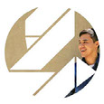

Punto de venta & comunicación
01. Diseño Gráfico
Piezas para punto de venta y comunicación de marca: folletería, stickers, cartelería y arquigrafía.
- Adobe Photoshop
- Adobe Illustrator
Diseñador Digital

Buenos Aires, Argentina
/ Lo que hago
Hace 14 años que voy del diseño de una pieza gráfica al render de un stand comercial, con IA generativa en el medio todos los días.
Punto de venta & comunicación
Piezas para punto de venta y comunicación de marca: folletería, stickers, cartelería y arquigrafía.
Landings & sitios
Sitios y landing pages responsive, catálogos y link-in-bio listos para publicar.
Prototipado
Dashboards y prototipos funcionales de apps, pensados desde el flujo real de uso.
Montajes para retail
Montajes y visualizaciones 3D de locales y stands comerciales, piezas audiovisuales y motion.
Flujo diario
Diseño y generación de imágenes y video con IA, como una herramienta más del día a día.
Proyecto personal
Modelado y texturizado de personajes, como exploración personal fuera del trabajo diario.
Sergio Visgarra
Diseñador Gráfico & Web
Diseño para generar una mejor comunicación creativa en distintos rubros de Latinoamérica.
/ Sobre mí
Ahora mismo ando metido en el diseño de personajes 3D y el vibecoding. Las uso para ayudar a pequeñas empresas a resolver el día a día, tanto en lo visual como en la forma de trabajar.
/ Proyectos

Landing de agencia
Landing completa para una agencia de marketing digital: identidad, textos y el orden de las secciones para llevar al visitante hasta el contacto.
Diseño Web · UX/UI · Branding

Catálogo 3D + WhatsApp
Catálogo de decoración impresa en 3D con pedidos por WhatsApp. Más de 50 productos, con renders propios.
Diseño Web · 3D · E-commerce

Panel de gestión de equipo y contenido para el estudio Icon Digital.

Link-in-bio para pastelería moderna: pedidos, consultas y redes en un solo lugar.

Link-in-bio para consignataria de hacienda: sucursales y contacto directo por WhatsApp.
De mi Behance
Trabajo impreso real: cartelería, señalética y gráfica de punto de venta. Estoy subiendo las fotos a mi Behance.

Concepto de home minimalista para e-commerce de indumentaria deportiva.
Reel de edición: motion, cortes y color para piezas de redes.

Identidad de marca y web de pedidos para una rotisería.

Render 3D para probar tipografía e iluminación.

Flyers y piezas para redes de Kawasaki Navarro, SYM y UnoMotos.
/ Proyecto personal
Por fuera del trabajo vengo metiéndome en modelado y texturizado de personajes con ZBrush y Substance Painter. Todavía es un juego más que un servicio, pero el proceso de cada pieza lo voy subiendo a mi Behance.
Ver el proceso en Behance ↗En desarrollo
La estoy armando de a poco. Voy a ir subiendo capturas del proceso a medida que termino piezas.
/ Trayectoria
Trabajo independiente — Workana, Fiverr, contacto directo
Kawasaki Navarro
UnoMotos
Imagic (Imarket Srl.)
Overhard Digital
SoulFire — pasantía
/ Contacto
Contame de qué se trata y te respondo directo.
Directo
Puedo arrancar ya · Híbrido en CABA o 100% remoto
Creemos algo juntos.